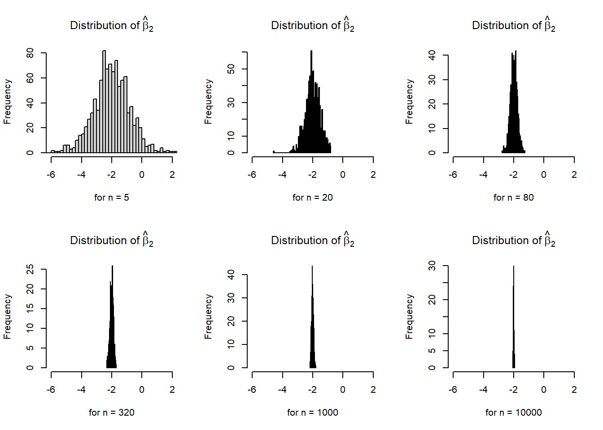
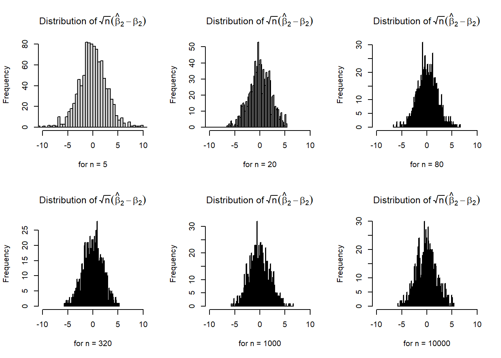
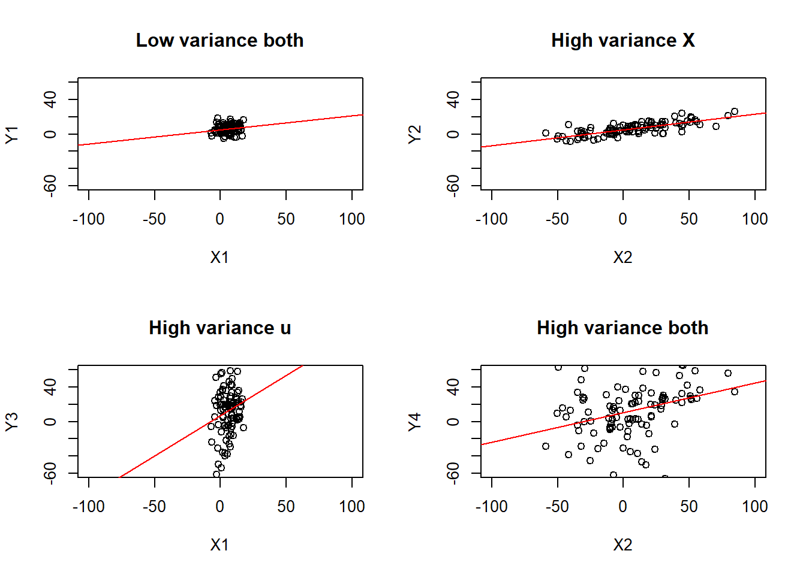

Consider the simple linear regression model. We revisit the asymptotic distribution of \[
\sqrt{n} (\hat{\beta}_2 - \beta_2) = \frac{ \frac{1}{\sqrt{n}} \sum_{i=1}^{n} (x_i - \overline{x}_{n} ) u_i }{\frac{1}{n} \sum_{i=1}^{n} (x_i - \overline{x}_{n})^{2} }.
\]
Last week, we have shown \[
\frac{1}{n} \sum_{i=1}^{n} (x_i - \overline{x}_{n} )^{2} \xrightarrow{p} \sigma_{x}^{2},
\] so now we solely focus on the numerator of the expression. Write for all of the following steps what we use and why we do it.
The second term can be rewritten as: \[
\textcolor{red}{\frac{1}{\sqrt{n}} \sum_{i=1}^{n} (\mu_x - \overline{x}_{n} ) u_i} =
\textcolor{orange}{(\mu_x - \overline{x}_{n} )}\textcolor{green} {\frac{1}{\sqrt{n}} \sum_{i=1}^{n} u_i},
\] and despite the fact that \[
\textcolor{orange}{(\mu_x - \overline{x}_{n} )} \xrightarrow{p} 0,
\] we need to still consider the convergence of \(\textcolor{green} {\frac{1}{\sqrt{n}} \sum_{i=1}^{n} u_i}\).
The term \(\textcolor{green} {\frac{1}{\sqrt{n}} \sum_{i=1}^{n} u_i}\) is not straightforward to work with. However, we remember a theorem that tell us \[
z_n = \frac{\overline{u}_n - E(u_i)}{\sigma/\sqrt{n}} \xrightarrow{d} N(0,1).
\] Maybe we can use this result, because
\(E(u_{i}) = E(E(u_{i}|x_{i})) = E(0) = 0\). Some algebra reveals that \[
\sqrt{n}\overline{u}_n = \sigma z_n \xrightarrow{d} \sigma z \sim N(0,\sigma^2).
\]
We now know that \[
\textcolor{orange}{(\mu_x - \overline{x}_{n} )}\textcolor{green} {\frac{1}{\sqrt{n}} \sum_{i=1}^{n} u_i} \xrightarrow{d} 0.
\] But why do we also know that it converges in probability to zero?
Now consider \[
\textcolor{blue}{\frac{1}{\sqrt{n}} \sum_{i=1}^{n} (x_i - \mu_x) u_i}.
\] Define \(v_{i} = (x_i - \mu_x) u_i\) and convince yourself that you can follow exactly the same reasoning as in Step 3 to obtain that its asymptotic distribution is given by \(N(0,\sigma^{2}_{v})\).
We are now ready to show that \[
\frac{1}{\sqrt{n}} \sum_{i=1}^{n} (x_i - \overline{x}_{n} ) u_i = \textcolor{blue}{\frac{1}{\sqrt{n}} \sum_{i=1}^{n} (x_i - \mu_x) u_i} +
\textcolor{red}{\frac{1}{\sqrt{n}} \sum_{i=1}^{n} (\mu_x - \overline{x}_{n} ) u_i} \xrightarrow{d} N(0, \sigma^{2}_{v}).
\]
The original sequence \(\frac{1}{\sqrt{n}} \sum_{i=1}^{n} (x_i - \overline{x}_{n} ) u_i\)does not consist of i.i.d. terms, because \(\overline{x}_{n}\) is present in each term. Therefore, no theorems can be applied directly. The split of terms is done using telescoping.
We note that the expression in orange does not depend on \(i\). The convergence of the expression in orange is due to the (weak) law of large numbers. Note that we can only consider the convergence of both terms separately (using Slutsky) if we know that they actually converge.
The first result is due to the central limit theorem, while \(E(u_{i}) = 0\) follows from Assumption 2.3 after applying the law of total expectation.
Convergence in distribution to zero is a direct consequence of Slutsky’s theorem. We can say that this convergence is also in probability, because we have convergence to a degenerate distribution, i.e. a distribution with all mass on one point: in this case on zero. In this specific scenario convergence in distribution implies convergence in probability (usually it is only the other way around!).
The result is indeed extremely similar to Step 3 and showing that \(E(v_{i}) = 0\) we have done before in this course.
This result is directly due to Slutsky’s theorem. The part in blue converges to \(N(0,\sigma^{2}_{v})\) in distribution, while the red part converges in probability to zero. Thus, the sum rule of Slutsky’s theorem suffices here.
The final result is also due to Slutsky’s theorem.
Exercise 2
Consider the no-intercept model \[
y_{i} = \beta x_{i} + u_{i},
\] where the regressor is assumed random. Moreover, assume \(E(x_{i}^{4}) < \infty\). Show that \(\sqrt{n}(\hat{\beta} - \beta) \xrightarrow{d} N\left(0,\frac{\sigma_v^2}{(\mu_x^2 + \sigma_x^2)^2} \right)\), where \(\sigma^2_v = \Var(x_i u_i)\).
CautionSolution
We can take the following steps for the denominator:
\(\frac{1}{n} \sum_{i=1}^{n} x_{i}^2 \xrightarrow{p} E(x_{i}^2)\) by the law of large numbers. We use the variance identity for the random variable \(x_i^2\) to show that \(\Var(x_i^2) = E(x_i^4) - (E(x_i^2))^2 < \infty\).
We use the variance identity again (for \(x_i\) this time) to find \(E(x_i^2) = \Var(x_i) + (E(x_i))^2 = \sigma_x^2 + \mu_x^2\).
For the numerator, we define \(v_i = x_i u_i\) and note that:
From the central limit theorem, we know that \[
z_n = \frac{\overline{v}_{n} - E(v_i)}{\sigma_v/\sqrt{n}} \xrightarrow{d} z \sim N(0,1).
\]
Since \(E(x_i u_i) = E(E(x_i u_i | x_i)) = E(x_i E(u_i|x_i)) = E(x_i \times 0) = 0\) by the adapted assumption 2.3 and the law of total expectation, we have that \(\sqrt{n}\overline{v}_{n} = \sigma_v z_{n} \xrightarrow{d} N(0,\sigma_v^2)\).
By means of Slutsky’s theorem (quotient rule), we now obtain the following: \[
\sqrt{n}(\hat{\beta} - \beta) = \frac{\frac{1}{\sqrt{n}}\sum_{i=1}^{n}x_i u_i}{\frac{1}{n}\sum_{i=1}^{n} x_{i}^2} \xrightarrow{d} \frac{1}{\sigma^2_x + \mu^2_x} N(0, \sigma^2_v) = N\left(0,\frac{\sigma_v^2}{(\mu_x^2 + \sigma_x^2)^2} \right).
\]
Exercise 3
Consider a simulated data set with the following properties:
\(x_i \overset{i.i.d.}{\sim} U(15, 25)\).
\(u_i \overset{i.i.d.}{\sim} U(−10, 10)\) and independent from \(x_i\), which ensures \(E(u_i | x_i) = 0\).
\(y_i = 700 − 2 x_i + u_i\)
Show that \[
\frac{1}{n} \frac{ \Var[(x_i - \mu_x) u_i ] }{ [\Var( X_i )]^{2} } = \frac{4}{n}.
\]Hint: What is the variance of a variable with \(U(a,b)\) distribution? Use that \(X_i\) and \(u_i\) are independent in this example.
Implement this in a simulation study. In addition to \(n=5, 20, 80, 320\), also consider the case where \(n = 1,000\). Compute histograms and sample statistics for both \(s_{n} = \hat{\beta}_{2}\) and \(z_{n} = \sqrt{n}(\hat{\beta}_{2} - \beta_{2})\). Is it in line with your expectations?
CautionSolution
To show that \[
\frac{1}{n} \frac{\Var[(x_i - \mu_x)u_i]}{[\Var(x_i)]^{2} } = \frac{4}{n},
\] we first consider the numerator. Because \(x_i\) and \(u_i\) are independent, we have \[
\Var[(x_i - \mu_x)u_i] = \Var(x_i - \mu_x)\Var(u_i).
\] We can now use the fact that a variable with \(U(a,b)\) distribution has variance \(\frac{1}{12}(b-a)^{2}\) to find that \[
\begin{aligned}
&\Var(x_i - \mu_x) = \Var(x_i) = \frac{(25-15)^2}{12} = \frac{100}{12} \\
&\Var(u_i) = \frac{[10-(-10)]^2}{12} = \frac{400}{12}.
\end{aligned}
\] Combining everything, we obtain the following result: \[
\frac{1}{n} \frac{\Var[(x_i - \mu_x)u_i]}{[\Var(x_i)]^{2}} = \frac{1}{n} \frac{\frac{100}{12}\frac{400}{12} }{ (\frac{100}{12})^{2} } = \frac{4}{n}.
\]
See example code below this solution box.
Click here to see the corresponding R code
## Set the seed (for pseudo-random samples)set.seed(9999)## Number of iterations, sample sizes, values for betasim <-1000n <-c(5, 20, 80, 320, 1000, 10000)beta <-c(700, -2)N <-length(n)## Initialize matrices for saving estimates (and standardization)save_beta_hat2 <-matrix(data =0, nr = sim, nc =length(n))save_z <-matrix(data =0, nr = sim, nc =length(n))## Perform the simulation study for different sample sizes nfor (i in1:N){## Performs the simulation study based on sim iterationsfor (iter in1:sim){ x <-runif(n[i], 15, 25) u <-runif(n[i], -10, 10) y <- beta[1] + beta[2] * x + u model <-lm(y ~ x) save_beta_hat2[iter, i] <- model$coefficients[2] save_z[iter, i] <-sqrt(n[i]) * (model$coefficients[2] - beta[2]) }}## We draw the histograms on the same horizontal axis to make them comparablepar(mfrow =c(2, 3))hist(save_beta_hat2[,1], breaks=100, main=bquote("Distribution of"~hat(beta)[2]), xlab="for n = 5", xlim=c(-6,2))hist(save_beta_hat2[,2], breaks=100, main=bquote("Distribution of"~hat(beta)[2]), xlab="for n = 20", xlim=c(-6,2))hist(save_beta_hat2[,3], breaks=100, main=bquote("Distribution of"~hat(beta)[2]), xlab="for n = 80", xlim=c(-6,2))hist(save_beta_hat2[,4], breaks=100, main=bquote("Distribution of"~hat(beta)[2]), xlab="for n = 320", xlim=c(-6,2))hist(save_beta_hat2[,5], breaks=100, main=bquote("Distribution of"~hat(beta)[2]), xlab="for n = 1000", xlim=c(-6,2))hist(save_beta_hat2[,6], breaks=100, main=bquote("Distribution of"~hat(beta)[2]), xlab="for n = 10000", xlim=c(-6,2))

Click here to see the corresponding R code
## The variance of beta.hat2 converges to zero as n grows larger## We draw the histograms on the same horizontal axis to make them comparablepar(mfrow =c(2, 3))hist(save_z[,1], breaks=100, main=bquote("Distribution of"~sqrt(n)(hat(beta)[2] - beta[2])), xlab="for n = 5", xlim=c(-10,10))hist(save_z[,2], breaks=100, main=bquote("Distribution of"~sqrt(n)(hat(beta)[2] - beta[2])), xlab="for n = 20", xlim=c(-10,10))hist(save_z[,3], breaks=100, main=bquote("Distribution of"~sqrt(n)(hat(beta)[2] - beta[2])), xlab="for n = 80", xlim=c(-10,10))hist(save_z[,4], breaks=100, main=bquote("Distribution of"~sqrt(n)(hat(beta)[2] - beta[2])), xlab="for n = 320", xlim=c(-10,10))hist(save_z[,5], breaks=100, main=bquote("Distribution of"~sqrt(n)(hat(beta)[2] - beta[2])), xlab="for n = 1000", xlim=c(-10,10))hist(save_z[,6], breaks=100, main=bquote("Distribution of"~sqrt(n)(hat(beta)[2] - beta[2])), xlab="for n = 10000", xlim=c(-10,10))

Exercise 4
Consider the linear regression model \[
y_i = \beta_1 + \beta_2 x_i + u_i \qquad (i = 1, 2, \ldots , n).
\] When \(n\) is large enough the variance of the LS estimator of \(\beta_2\) is \[
\Var(\hat{\beta}_{2}) \approx \frac{1}{n} \frac{\Var[(x_i - \mu_x) u_i]}{[\Var(x_i)]^{2}}.
\]
Discuss the implications of this formula by considering the effects of a smaller (larger) \(\Var(u_i)\) and of a smaller (larger) \(\Var(x_i)\) on \(\Var(\hat{\beta}_{2})\).
Support your discussion by generating some data that explicitly shows this.
Click here to see the R code to generate these graphs
## Example codeset.seed(12345)n <-100beta <-c(5, 0.2)muX <-5sigma2X <-c(5, 30)X1 <-rnorm(n, muX, sigma2X[1])X2 <-rnorm(n, muX, sigma2X[2])sigma2u <-c(5, 30)u1 <-rnorm(n, 0, sigma2u[1])u2 <-rnorm(n, 0, sigma2u[2])### DGPsY1 <- beta[1] + beta[2] * X1 + u1 ## Low variance X and uY2 <- beta[1] + beta[2] * X2 + u1 ## High variance X, low variance uY3 <- beta[1] + beta[2] * X1 + u2 ## Low variance X, high variance uY4 <- beta[1] + beta[2] * X2 + u2 ## High variance X and u## Regressionsmodel1 <-lm(Y1 ~ X1)model2 <-lm(Y2 ~ X2)model3 <-lm(Y3 ~ X1)model4 <-lm(Y4 ~ X2)par(mfrow =c(2, 2))plot(X1, Y1, xlim =c(-100, 100), ylim =c(-60, 60), main ="Low variance both")abline(model1, col ="red")plot(X2, Y2, xlim =c(-100, 100), ylim =c(-60, 60), main ="High variance X")abline(model2, col ="red")plot(X1, Y3, xlim =c(-100, 100), ylim =c(-60, 60), main ="High variance u")abline(model3, col ="red")plot(X2, Y4, xlim =c(-100, 100), ylim =c(-60, 60), main ="High variance both")abline(model4, col ="red")

CautionSolution
If the variance of the errors is small, i.e. \(\Var(u_i)\) is small, then the data will have a tighter scatter around the population regression line so its slope will be estimated more precisely. So the variance of the OLS slope coefficient estimator is smaller if the variance of the errors is smaller while everything else is being kept the same. The larger the variance of the \(x_i\)’s the smaller the variance of the LS slope coefficient estimator. If there is more variation in the data then the slope coefficient can be estimated more precisely.